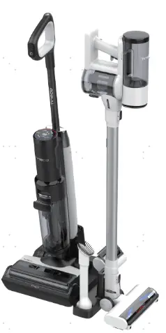
| No | Date | Comments | Version | ISSUE | Approve |
|---|---|---|---|---|---|
| 1 | 24.07.31 | First Draft | 1.0 | Ellen | |
| 2 | 24.08.28 | Add tear down power source | 1.1 | Ellen | |
| 3 | |||||
| 4 |
History
Tools
Electric screwdriver\Long-nose pliers\Slotted screwdriver\Zip tie\Scissors
Repair notice
Important Safety Instructions：
1. Wear gloves when carrying out any repair work.
2. Ensure that there are no exposed electrical wires in the maintenance environment and strictly prohibit direct testing of the equipment with AC power to prevent electric shock.
3. When repairing electrical components, please disconnect the battery pack first.
Preparation:
Empty the clean water tank and dirty water tank before disassembly.
Replacement requirements:
1. All parts that have passed the cross-check must be removed from the faulty machine, fitted with the user's original adapter and then subjected to the next replacement test.
2. After repair, organise the removed old parts and unused parts.
Range of Product
| No | Product Name | Factory Serial Model | SKU | Note |
|---|---|---|---|---|
| 1 | Floor One S7 Combo | CL2220B-01 | FW250300DE | |
| 2 | Floor One S7 Combo | CL2220A-01 | FW250100US | |
| 3 | Floor One Switch S7 | CL2220I-03 | FW251700IN | |
| 4 | Floor one switch S7 | CL2220H-01 | FW251000DE | |
| 5 | Floor one switch S7 | CL2220G-01 | FW250800US | |
| 6 | Floor one switch S7 | CL2220L-01 | FW251600JP | |
| 7 | Floor One Switch S7 Pet | CL2220H-03 | FW251800DE | |
| 8 | Floor one switch S7 | CL2220I-02 | FW251300VN | |
| 9 | Floor One Switch S7 | CL2220H-04 | FW251900DE | |
| 10 | Floor one switch S7 | CL2220I-01 | FW251200MY |
Range of Spare Part
*The following table lists all the spare parts. Please check the actual inventory before use.
| No | Spare Part Name | Remark |
|---|---|---|
| 1 | HEPA & Cover Assembly – vacuum | |
| 2 | Brush Roller Cover | |
| 3 | Brush Roller | |
| 4 | HEPA Assy – floor washer | 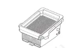 |
| 5 | Filter Holder – vacuum | 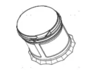 |
| 6 | Accessory Holder | 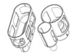 |
| 7 | Main Body | 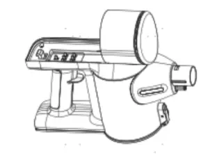 |
| 8 | Adapter | |
| 9 | vacuum Base | 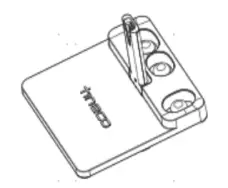 |
| 10 | Charging Base floor washer | 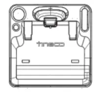 |
| 12 | Battery | 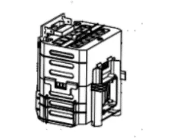 |
| 13 | Repair Charging Chip | 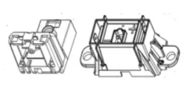 |
| 14 | Display Screen | 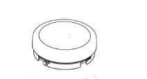 |
| 15 | Sewage water pipe | 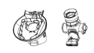 |
| 16 | Black transparent plastic part on main body | 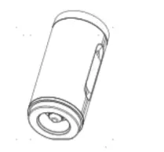 |
| 17 | Wire contact pins | 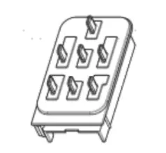 |
| 18 | Wire | The conductor components for the electrolyzed water. 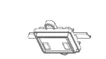 |
| 19 | Switch | 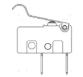 |
| 20 | Motor | 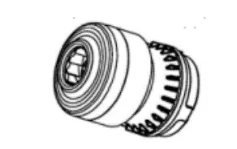 |
| 21 | Brush roller Motor | 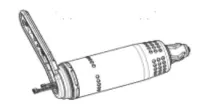 |
| 22 | Power source | 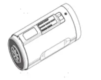 |
| 23 | PCBA | 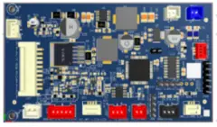 |
| 24 | PCBA of brush part | 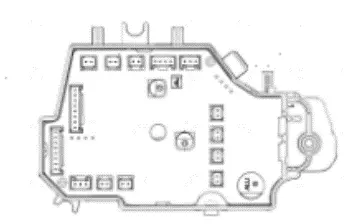 |
| 25 | Scraper | 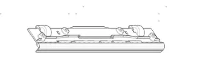 |
| 26 | Water level Sensor | 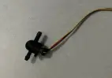 |
| 27 | Iloop dirt Sensor | 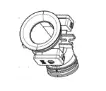 |
| 28 | Pump | 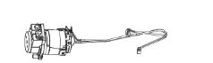 |
| 29 | assist Wheel | 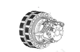 |
| 30 | Handle | |
| 31 | Clean Water Tank | |
| 32 | Dirt Water Tank | |
| 33 | Carpet Brush vacuum | |
| 34 | Mini Power Brush vacuum | |
| 35 | Tube Assembly vacuum |
Wiring diagram
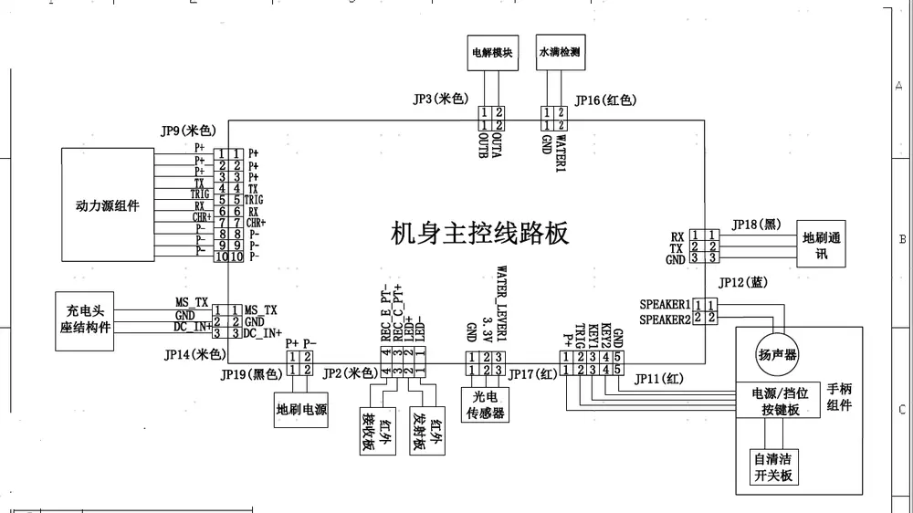
| No | Remark |
|---|---|
| JP9 （Beige） | Power source |
| JP14（Beige） | Charging |
| JP19（black） | Brush power |
| JP2（Beige） | Dirt sensor |
| JP17（red） | Water level sensor |
| JP11（red） | On/off switch； mode switch |
| JP12（blue） | Speaker |
| JP18（black） | Brush signal |
| JP16 (red) | Water full detection |
| JP3 （Beige） | electrolyzed water mode |
Tear down Guide
Tear down the PCBA
Disassemble all accessories
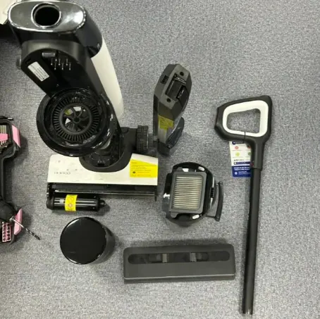
1.2 Use a screwdriver to pry open the back cover, unplug the terminal, and remove the PCBA.
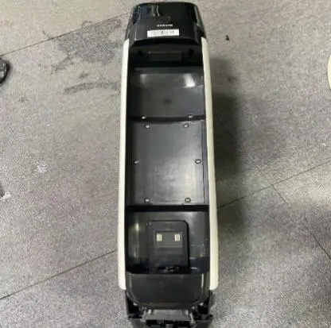
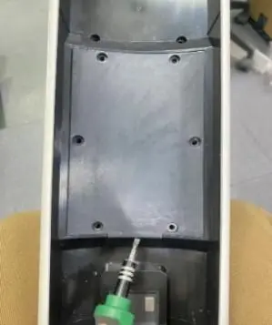
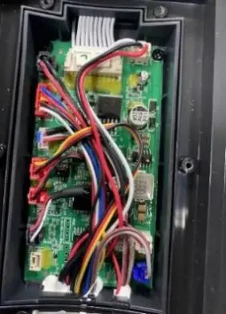
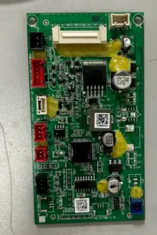
Tear down brush part
2.1 Unscrew the screw and remove the scraper
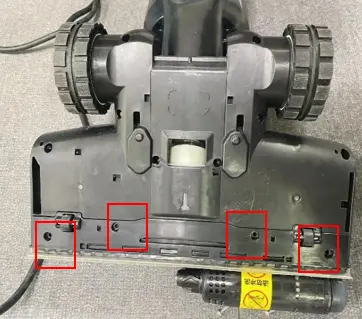
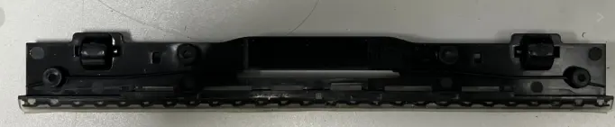
2.2 Unscrew the screws, open the upper cover of the brush, and unplug the terminal
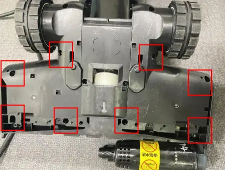
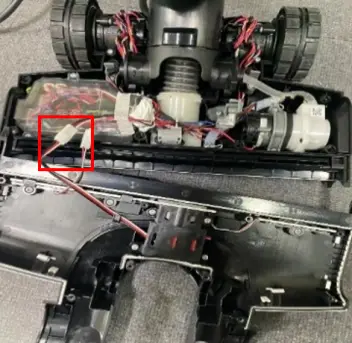
2.3 Unscrew the screws, remove the white glue, and disassemble the floor brush pcba protective cover
Note: after replacing the pcba, please reapply white glue
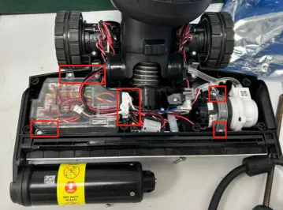
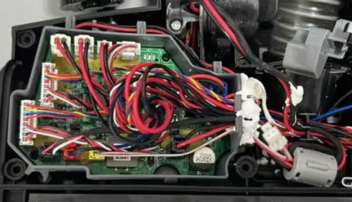
2.4 Unscrew the screws and remove the brush motor and water pump
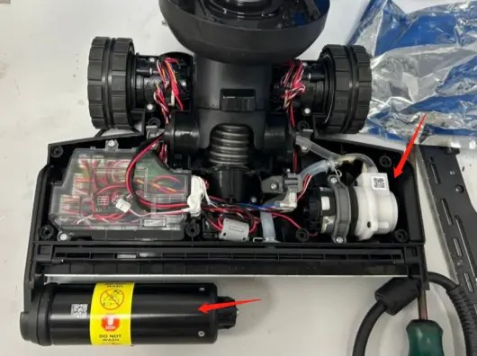
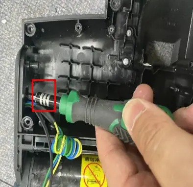
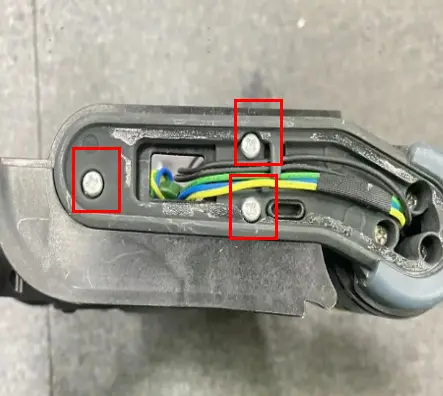
2.5 Remove the screws and disassemble the assist wheel
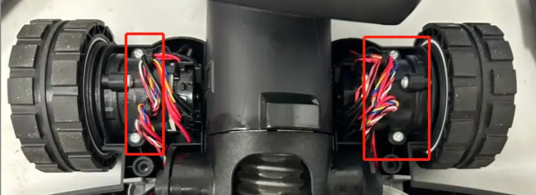
Tear down main body
3.1 Remove the screws and disassemble the plastic decorative cover
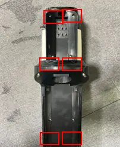
3.2 Remove the power source release button
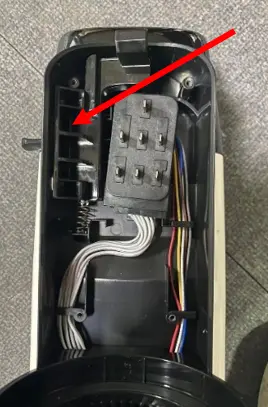
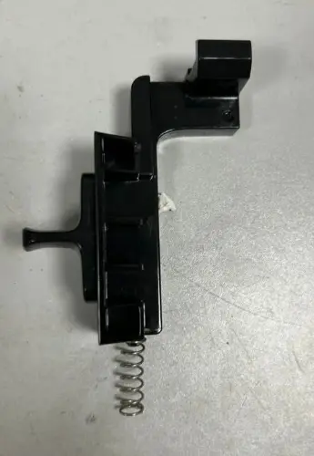
3.3 Refer to 1-2 to tear down brush part. Unscrew the screws on the brush part and the fixing screws of the rotary union to release the rotary union.
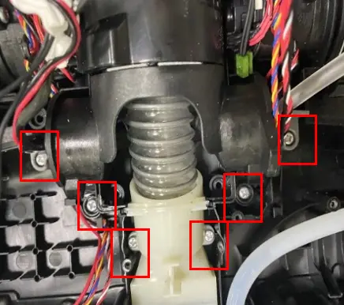
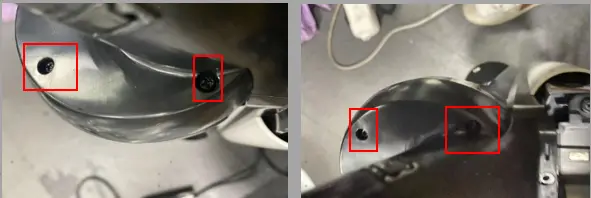
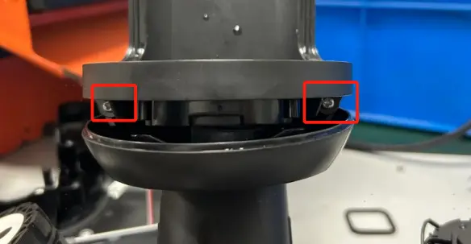
3.4 Unscrew the screws and remove the white plastic decorative cover. Use a screwdriver to remove the charging pin component
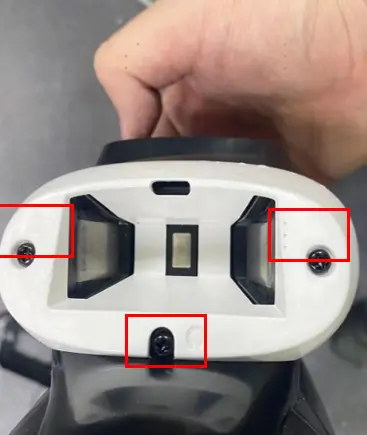
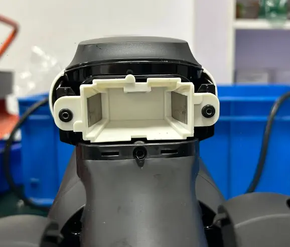
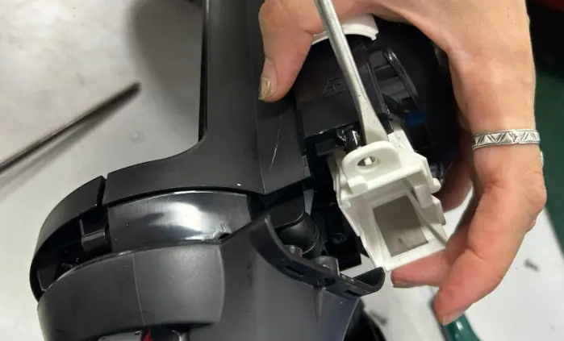
3.5 Use a screwdriver to push open the plastic cover from the front of the machine.
3.6 Unscrew the screws and remove the upper decorative cover on the machine.
3.7 Remove the white decorative plastic covers on both sides of the machine
3.8 Separate the front and back components
3.9 tear down water level sensor
3.10 Unscrew the screws and remove the iloop dirt sensor
Tear down power source
Remove the SN sticker and unscrew the screws.
Take off the screen by hand and unplug the terminals that the screen is plugged into.
Unplug other terminals and unscrew the two screws
Use a screwdriver to pry off the wire contact pins
Remove the screws and take out the battery pack.
Remove the bottom cover of the power source and take out the motor assembly
Remove the motor protection cover
Repair Guide
| Failure System | Failure Phenomenon | No | Failure Mode | Repair Solution | Spare Parts |
|---|---|---|---|---|---|
| Water circulation system failure | No/less spray water | 1 | CWT failure | replace CWT | CWT |
| 2 | spray hole blocked | clean spray hole | maintenance | ||
| 3 | CWT seal ring rubber failure | replace CWT seal ring | CWT seal ring | ||
| 4 | pump failure | replace pump | pump | ||
| 5 | main pcba failure | replace main pcba | main pcba | ||
| 6 | brush pcba failure | replace brush pcba | brush pcba | ||
| 7 | pipe blocked | replace water pipe | water pipe | ||
| 8 | pipe bent or broken | fix or replace pipe | water pipe | ||
| 9 | water level sensor blocked | replace water level sensor | water level sensor | ||
| leaking water | 10 | CWT leaking water | replace CWT | CWT | |
| 11 | pump failure | replace pump | pump | ||
| 12 | water level sensor broken | replace water level sensor | water level sensor | ||
| 13 | water pipe loose | Re-plug water pipe | water pipe | ||
| 14 | Sewage recovery pipe damaged | replace sewage recovery pipe | Rotary union | ||
| 15 | DWT broken | replace DWT | DWT | ||
| 16 | brush pcba failure | replace brush pcba | brush pcba | ||
| 17 | HEPA damaged | replace HEPA | HEPA | ||
| 18 | water pipe damaged | replace water pipe | water pipe | ||
| no suck up water | 19 | Debris channel /Air duct blocked | 1.remove blockage from debris channel，around the brush roller and suction hose； 2.Dry and clean HEPA; 3.Empty and clean the DWT | maintenance | |
| 20 | HEPA not install properly | reinstall HEPA properly | maintenance | ||
| 21 | brush roller damage | replace brush roller | brush roller | ||
| 22 | Sewage recovery pipe damaged | replace sewage recovery pipe | Rotary union | ||
| 23 | motor failure | replace main motor | main motor | ||
| 24 | brush roller motor failure | replace brush roller motor | brush roller motor | ||
| 25 | brush pcba failure | replace brush pcba | brush pcba | ||
| 26 | Main PCBA failure | replace main PCBA | main PCBA | ||
| Turn on failure | the unit has no reaction, screen not light up | 27 | power source not installed properly | reinstall power source | NFF |
| 28 | handle failure | replace handle | handle | ||
| 29 | power source contact pin damaged | replace contact pin | contact pin | ||
| 30 | power source failure | replace power source | power source | ||
| 31 | Main PCBA failure | replace main PCBA | main PCBA | ||
| After pressing the on/off button, the display lights up, but it doesn't work after releasing the micro switch. | 32 | Micro switch failure | replace Micro switch failure | Micro switch | |
| 33 | Motor failure | replace motor/power source | motor/power source | ||
| 34 | Main PCBA failure | replace main PCBA | main PCBA | ||
| stop running after several times, screen prompts that the motor is faulty | 35 | motor failure | replace motor/power source | motor/power source | |
| stop running after several times screen dies out | 36 | handle failure | replace handle | handle | |
| 37 | power source contact pin damaged | replace contact pin | contact pin | ||
| 38 | Main PCBA failure | replace main PCBA | main PCBA | ||
| mode switch failure | switch mode but no reaction | 39 | handle failure | replace handle | handle |
| 40 | Main PCBA failure | replace main PCBA | main PCBA | ||
| switch mode but power-off automatically | 41 | Main PCBA failure | replace main PCBA | main PCBA | |
| 42 | motor failure | replace motor | motor | ||
| False alarm | DWT water is full but no alarm/Water is not full but still alarm | 43 | DWT full | Empty/clean the DWT | maintenance |
| 44 | DWT pin damaged | replace DWT | DWT | ||
| 45 | DWT signal wire failure | Replace DWT signal wire | DWT signal wire | ||
| 46 | Main PCBA failure | replace main PCBA | main PCBA | ||
| CWT have enough water but still alarm, and no/less water spray out from outlet. | 47 | CWT failure | replace CWT | CWT | |
| 48 | The rubber valve under CWT damaged | replace CWT | CWT | ||
| 49 | spray hole blocked | clean spray hole | maintenance | ||
| 50 | The valve (located in the machine body, connected to the valve under CWT) is blocked | Clean the valve | Maintenance | ||
| 51 | pipe blocked | replace water pipe | water pipe | ||
| 52 | pipe bent or broken | fix or replace pipe | water pipe | ||
| 53 | pump failure | replace pump | pump | ||
| 54 | water level sensor blocked | replace water level sensor | water level sensor | ||
| 55 | main PCBA failure | replace main pcba | main pcba | ||
| CWT have enough water but still alarm, and the machine spraying water normally | 56 | The Water level sensor has air bubbles inside | It tested okay after being turned up to the maximum setting for 30s | NFF | |
| 57 | water level sensor failure | replace water level sensor | water level sensor | ||
| 58 | main PCBA failure | replace main PCBA | main PCBA | ||
| CWT have no water but not alarm | 59 | water remain in water level sensor | It tested okay after being turned up to the maximum setting for 30s | NFF | |
| 60 | water level sensor failure | replace water level sensor | water level sensor | ||
| 61 | main PCBA failure | replace main PCBA | main PCBA | ||
| iloop ring always red when suck nothing dirty | 62 | Debris channel /Air duct blocked/dirty | 1.remove blockage/dirt from debris channel，around the brush roller and suction hose； 2.Dry and clean HEPA; 3.Empty and clean the DWT | maintenance | |
| 63 | dirty sensor failure | replace dirty sensor | dirty sensor | ||
| 64 | Main PCBA failure | replace main PCBA | main PCBA | ||
| 65 | display screen failure | replace display screen/power source | display screen/power source | ||
| iloop ring always blue even suck dirty water (or other color liquid) | 66 | dirty sensor failure | replace dirty sensor | dirty sensor | |
| 67 | Main PCBA failure | replace main PCBA | main PCBA | ||
| 68 | display screen failure | replace display screen/power source | display screen/power source | ||
| screen display malfunction | screen no reaction/display incomplete/display blinking | 69 | display screen failure | replace display screen/power source | display screen/power source |
| 70 | Main PCBA failure | replace main PCBA | main PCBA | ||
| abnormal noise | motor noise | 71 | motor failure | replace motor/power source | motor/power source |
| brush noise | 72 | Brush roller blocked | Clean the debris channel blockage、debris wrapped around the brush roller 、suction nozzle blockage; | maintenance | |
| 73 | scraper has dirt buildup | clean the scraper | maintenance | ||
| 74 | brush roller heavy wear | replace brush roller | brush roller | ||
| 75 | The small wheel noisy | replace the repair wheel | repair wheel | ||
| 76 | assist wheel noisy | replace the assist wheel | assist wheel | ||
| 77 | Scraper broken | replace scraper | scraper | ||
| 78 | brush roller motor failure | replace brush roller motor | brush roller motor | ||
| pump noise | 79 | NFF | CWT empty. refill CWT | NFF | |
| 80 | pump failure | replace pump | pump | ||
| Rotary union noise | 81 | Rotary union broken | replace Rotary union | Rotary union | |
| press the self-cleaning button but voice remind to place unit on dock | 82 | charging pins of main body damaged | replace charging pin | charging pin | |
| 83 | charging pins of charging base damaged | replace charging base | charging base | ||
| 84 | Main PCBA failure | replace main PCBA | main PCBA | ||
| 85 | Rotary union cosmetic damage | replace Rotary union | Rotary union | ||
| press the self-cleaning button but voice remind to install power source | 86 | power source not installed properly | reinstall power source | NFF | |
| 87 | power source contact pin dirty/dent/damaged | replace contact pin | contact pin | ||
| 88 | Main PCBA failure | replace main PCBA | main PCBA | ||
| stop running in self-cleaning process, and the screen turned off | 89 | NFF | make sure CWT full，DWT empty，unit connect to power and brush not blocked | NFF | |
| 90 | power source not installed properly | reinstall power source | NFF | ||
| 91 | power source contact pin dirty/dent/damaged | replace contact pin | contact pin | ||
| 92 | motor failure | replace motor/power source | motor/power source | ||
| 93 | battery failure | replace battery/power source | replace battery/power source | ||
| 94 | Main PCBA failure | replace main PCBA | main PCBA | ||
| press the self-cleaning button but no reaction | 95 | handle failure | replace handle | handle | |
| 96 | Main PCBA failure | replace main PCBA | main PCBA | ||
| self-cleaning cannot stop | 97 | Main PCBA failure | replace main PCBA | main PCBA | |
| after finish self-cleaning program still remind “Please begin self-cleaning cycle” | 98 | debris channel dirty | clean Sewage water pipe | maintenance | |
| 99 | Main PCBA failure | replace main PCBA | main PCBA | ||
| Brush roller not spinning | Brush roller stop spinning, and the machine alarm brush abnormal | 100 | brush roller blocked | clean brush roller and remove blockage | maintenance |
| 101 | brush roller heavy wear | replace brush roller | brush roller | ||
| 102 | brush roller motor failure | replace brush roller motor | brush roller motor | ||
| 103 | brush pcba failure | replace brush pcba | brush pcba | ||
| 104 | Main PCBA failure | replace main PCBA | main PCBA | ||
| Brush roller not spinning with no alarm | 105 | brush roller motor failure | replace brush roller motor | brush roller motor | |
| 106 | brush pcba failure | replace brush pcba | brush pcba | ||
| 107 | Main PCBA failure | replace main PCBA | main PCBA | ||
| charging system failure | Poor charging contact（shake to charge） | 108 | charging pins of main body damaged | replace charging pin | charging pin |
| 109 | charging pins of charging base damaged | replace charging base | charging base | ||
| 110 | Rotary union worn or damaged | replace Rotary union | Rotary union | ||
| no reaction during charging | 111 | adapter failure | replace adapter | adapter | |
| 112 | charging pins of main body damaged | replace charging pin | charging pin | ||
| 113 | charging pins of charging base damaged | replace charging base | charging base | ||
| 114 | battery pack failure | replace battery pack/power source | battery pack/power source | ||
| 115 | Main PCBA failure | replace main PCBA | main PCBA | ||
| Battery level indicator flashes several times and then goes off, then the machine stop charging; battery level under 100% and the indicator unable To Increase | 116 | battery pack failure | replace battery pack/power source | battery pack/power source | |
| battery level drop when in charging | 117 | battery pack failure | replace battery pack/power source | battery pack/power source | |
| 118 | Main PCBA failure | replace main PCBA | main PCBA |